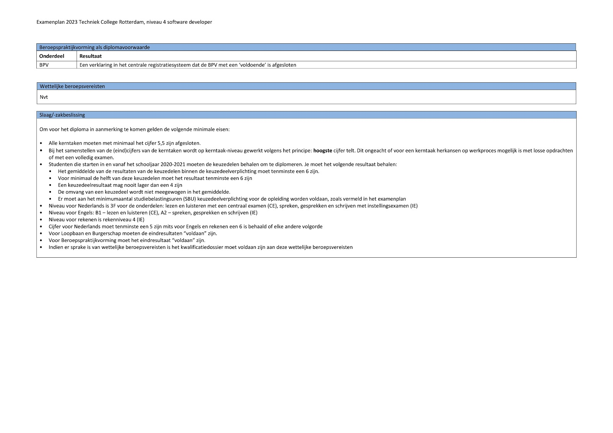
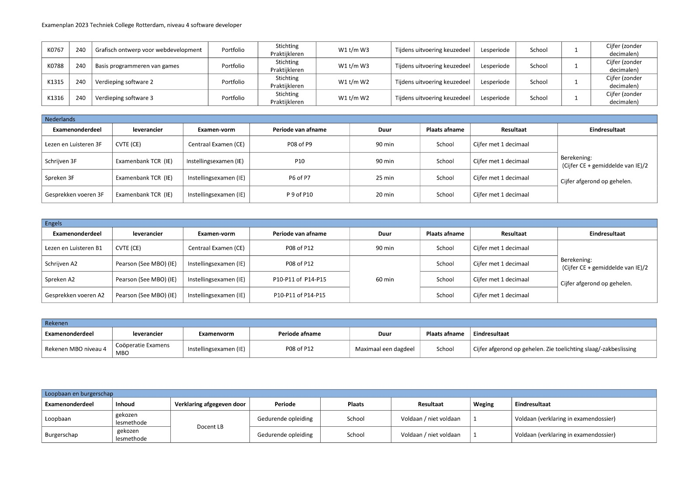
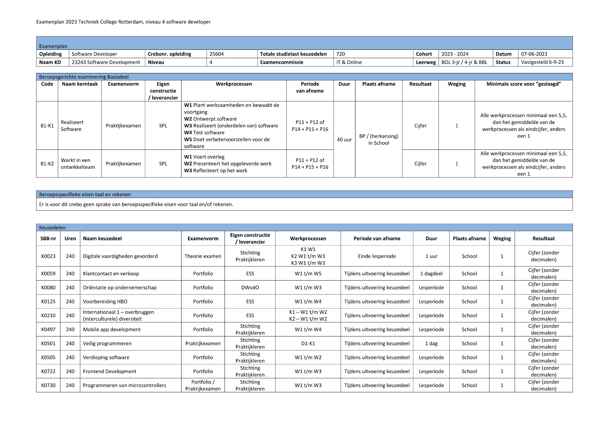
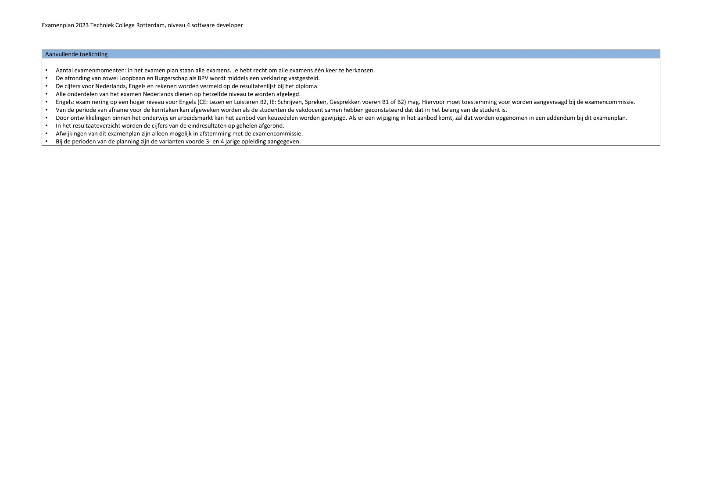

Opleiding
Projectbeschrijving
Voor dit project ga je een website maken waar alle informatie over de opleiding in komt te staan. Deze website ga je uiteindelijk in week 9 presenteren aan jullie ouders die langskomen op de ouderavond!
Projectonderdelen:
Deel 1: De Organisatie van de Opleiding
• Groepsgrootte: 2 personen
• Tijdslimiet: Maximaal 45 minuten per koppel In dit deel van de avond geef je samen met je
partner uitleg aan de wederzijdse ouders over de organisatie van de opleiding. Je maakt
hiervoor een zelfgebouwde website met alle benodigde informatie.
Deel 2: De Inhoud van de Opleiding
• Groepsgrootte: 3 personen
• Tijdslimiet: Variabel (geen specifieke tijdsbeperking)
In dit deel van de avond vorm je met andere groepsleden een team en geef je een presentatie,
uitleg of quiz over een onderdeel uit de inhoud van de opleiding. Je kunt hierbij gebruik maken
van Powerpoint of een ander presentatiemiddel naar keuze.
Let op: Voor Deel 1 is de website het centrale hulpmiddel, terwijl voor Deel 2 de keuze van presentatiemiddel vrij is. Zorg ervoor dat je beide delen goed voorbereidt, zodat jullie ouders een duidelijk en informatief beeld krijgen van de opleiding.
Onderwerpen
| Onderwerpen | StudentA | StudentB |
|---|---|---|
| Contactgegevens locatie | x | |
| Kantine | x | |
| Voorstelpagina student B | x | |
| Home pagina met tekst over ouderavond | x | x |
| Begeleidingsteam wat en hoe | x | |
| Beroep: wat doe je, baankans, stagekans | x | |
| Voorstelpagina student A | x | |
| Leermiddelen | x | |
| Locatie: bereikbaarheid, openingstijden, lestijden | x | |
| Studieplanning (Kalender Canvas) | x | |
| Kluisjes | x | |
| Ouderavonden | x | |
| Rooster en wijzigingen | x | |
| SLB'er taken, contactgegevens | x | |
| Veiligheid | x | |
| Te laat melden, verwijderen uit de les | x | |
| Vakantieplanning | x | |
| Aanwezigheid: afmelden & extra vrij | x | |
| Aanwezigheid: verzuimregels en gevolgen | x | |
| Aanwezigheid: geoorloofd en ongeoorloofd | x | |
| BPV: welke periodes | x | |
| Cursussen in Canvas | x | |
| Examens: inzage | x | |
| Beroepspraktijkvorming (stage) voorbereiding | x | |
| BPV werkzaamheden | x | |
| Examens: Fraude en onregelmatigheid | x | |
| Medezeggenschap student / ouder | x | |
| Praktijkovereenkomst | x | |
| Regels / afspraken / gedragscode | x | |
| Examens: herkansingen | x | |
| Inleveren opdrachten | x | |
| Klachten werkwijze procedure | x | |
| Studieresultaten: toetsen en examens | x | |
| Voortgangscriteria | x | |
| Onderwijsovereenkomst | x | |
| Studieresultaten: voortgang | x | |
| Bindend studie advies / Plaatsingsrecht | x | |
| Examens: Vrijstellingen, aanpassingen etc | x | |
| Eisen voor diploma | x | |
| Keuzedelen | x | |
| Onderwijstijd | x | |
| Examens: welke en wanneer | x | |
| Onderdelen opleiding: kerntaken, profieldelen, keuzedelen | x | |
| Rechten en plichten | x |
SLB
Taken van de Studieloopbaanbegeleider (SLB'er) is belast met de begeleiding van studenten gedurende hun hele studieproces, beginnend bij de intake. Deze begeleiding richt zich op het kernproces en omvat zowel persoonlijke begeleiding als instructies over wat en hoe er geleerd moet worden.
Contactgegevens van de SLB'er:
• E-mail: j.vanschaik@tcrmbo.nl;
• Telefoon: +31 6 889 452 357;
• Ook bereikbaar via Teams.
Voortgangscriteria
Om over te gaan moet je een voldoende voor alles staan en een zeven gemiddeld. Om een 3 jarig traject te volgens inplaats van 4, moet de aanwezigheid ook 80 procent zijn.
BPV
Periodes
BPV Periodes:
5+6 -> sep t/m jan 2024
11-12 -> sep t/m jan 2025
Voorbereiding
Voordat je aan je stage kunt beginnen, dien je eerst een geschikte stageplek te vinden. Stichting S-BB biedt een overzicht van erkende stagebedrijven op stagemarkt.nl.
De leerling stelt een CV op en schrijft een motivatiebrief, die vervolgens wordt verstuurd naar het bedrijf van interesse. Daarna kan je worden uitgenodigd voor een "sollicitatiegesprek" op locatie of online.
Afspraken, de inhoud van de BPV, begeleiding, het persoonlijke leerprogramma, en andere zaken worden door de school gecoördineerd in samenwerking met het bedrijf.
Tevens dient de leerling een Verklaring Omtrent Gedrag (VOG) aan te vragen, die verkrijgbaar is bij de gemeente.
De kosten voor een VOG variëren per gemeente. Aangezien de stage de student niets mag kosten, kan je het bonnetje of aankoopbewijs aan je stageplek overhandigen en zullen zij jou vergoeden.
Werkzaamheden
Tijdens je Beroepspraktijkvorming (BPV) worden je taken en verantwoordelijkheden van tevoren overeengekomen tussen het BPV-bedrijf en de school. Deze afspraken vormen de basis van je stageactiviteiten en worden doorgaans vastgelegd in een BPV-overeenkomst.
Meer informatie:
Tijdens je BPV krijg je de kans om praktijkervaring op te doen in een professionele omgeving die aansluit bij je studierichting. De werkzaamheden kunnen variëren, afhankelijk van de specifieke eisen en doelstellingen van je opleiding.
Het is belangrijk om goed op de hoogte te zijn van de gemaakte afspraken, zodat je weet wat er van je wordt verwacht tijdens je stageperiode. De BPV-overeenkomst is een document waarin onder andere de duur van de stage, de werkzaamheden die je zult uitvoeren, en de begeleiding die je kunt verwachten worden vastgelegd.
Zorg ervoor dat je deze overeenkomst goed doorleest en begrijpt voordat je aan je stage begint. Eventuele vragen of onduidelijkheden kun je bespreken met je BPV-begeleider of de verantwoordelijke docent op school.
Tijdens je stage is het belangrijk om een goede balans te vinden tussen leren en presteren. Neem initiatief, stel vragen en maak gebruik van de mogelijkheden om je vaardigheden en kennis verder te ontwikkelen.
Bovendien is het essentieel om open te staan voor feedback en bereid te zijn om te groeien in je rol binnen het BPV-bedrijf.
Keuzedelen
Tijdens je opleiding doe je ook een of meer keuzedelen. Dat zijn onderdelen waarmee je je kunt verbreden of verdiepen. Hierdoor krijg je extra kennis die je kunt gebruiken in je beroep of in de maatschappij. Het is een verplicht onderdeel binnen de opleiding. Elk keuzedeel heeft een aantal studiebelastingsuren (SBU’s). In het examenplan vind je de keuzedelen voor jouw opleiding. Sommige keuzedelen vinden (deels) in de beroepspraktijkvorming plaats. In dat geval wordt dat vermeld op de praktijkovereenkomst. Als je een ander keuzedeel wil volgen dan bij je opleiding wordt aangeboden, kan je hier een verzoek voor indienen bij je slb’er. De examencommissie moet dan onderzoeken of het door jou gewenste keuzedeel geen overlap heeft met jouw opleiding. Ook moet bekeken worden of het volgen van het keuzedeel roostertechnisch en organisatorisch haalbaar is.
Drone progameren
Omschrijving
In het keuzedeel Drones - techniek leert de beginnend beroepsbeoefenaar technische vaardigheden en onderliggende kennis die nodig zijn om drones in de lucht te krijgen en houden. Aan bod komen zaken als materialen- en motorenkeuzes, elektronica en ICT. Dit keuzedeel richt zich ook op onderhoud en aanpassing van de technische functionaliteit van drones. In dit kader moeten drones worden getest en daarom gaat het keuzedeel ook over de basis van het leren vliegen met een drone en de hieraan verbonden aspecten zoals wet- en regelgeving.
Mobile application design
Omschrijving
In dit keuzedeel bepaalt en ontwikkelt de beginnend beroepsbeoefenaar de vormgeving van een mobile app.
Mobile application development
Omschrijving
Het keuzedeel bevat specialistische kennis van ontwikkelomgevingen voor mobiele applicaties, types mobiele applicaties en hardware-specifieke functionaliteiten en beschrijft de processen van het realiseren van (onderdelen van) mobiele applicaties.
Progammeren van microcontrollers
Omschrijving
De beginnend beroepsbeoefenaar kan met dit keuzedeel de aansturing van apparatuur realiseren door middel van het bouwen van een (relatief eenvoudige) schakeling en het programmeren van een microcontroller die de schakeling aanstuurt. De kern van dit keuzedeel ligt vooral bij het programmeren van microcontrollers. Het kan zijn dat de microcontroller ingebouwd is in een singleboard computer, of extern is geplaatst (singlechip controller).
Verdieping software
Omschrijving
In dit keuzedeel verdiept de beginnend beroepsbeoefenaar zich in de software die van belang is voor zijn beroepsuitoefening en om zich te specialiseren. De beginnend beroepsbeoefenaar oriënteert zich op zijn (toekomstige) arbeidsmarkt en bepaalt welke software voor hem het meest relevant is. Hij maakt zich de software eigen. Hij past dit toe in een examen.
Onderwijstijd
De opleiding bestaat uit verschillende delen. Er zijn activiteiten op school, u loopt stage (beroepspraktijkvorming) en u werkt zelfstandig aan opdrachten. De opleiding duurt 2 tot 4 jaar. Als u aan bepaalde eisen voldoet, kunt u het in 2 of 3 jaar doen, de norm is 4 jaar.
Diploma eisen
Slaag/-zakbeslissing
Om voor het diploma in aanmerking te komen gelden de volgende minimale eisen:
• Alle kerntaken moeten met minimaal het cijfer 5,5 of met een Voldoende zijn afgesloten.
• Studenten die starten in en vanaf het schooljaar 2020-2021 moeten de keuzedelen behalen om te
diplomeren:
1. Het gemiddelde van de resultaten van de keuzedelen binnen de keuzedeelverplichting moet
tenminste
een 6 zijn;
2. Voor minimaal de helft van deze keuzedelen moet het resultaat tenminste een 6 zijn;
3. Een keuzedeelresultaat mag nooit lager dan een 4 zijn;
4. De omvang van een keuzedeel wordt niet meegewogen in het gemiddelde;
5. Er moet aan het minimumaantal studiebelastingsuren (SBU) keuzedeelverplichting voor de
opleiding
worden voldaan, zoals vermeld in het examenplan.
• Niveau voor Nederlands is 3F voor de onderdelen: lezen en luisteren met een centraal examen
(CE),
spreken, gesprekken en schrijven met instellingsexamens (IE).
• Niveau voor Engels: B1 – lezen en luisteren (CE), A2 - spreken, gesprekken en schrijven (IE).
• Niveau voor rekenen is rekenniveau 4 (IE).
• Cijfer voor Nederlands moet tenminste een 5 zijn mits voor Engels èn rekenen tenminste en een
6 is
behaald of elke andere volgorde.
• Voor Loopbaan en Burgerschap moeten de eindresultaten “voldaan” zijn.
• Voor Beroepspraktijkvorming moet het eindresultaat “voldoende” zijn.
• Indien er sprake is van wettelijke beroepsvereisten in het kwalificatiedossier moet voldaan
zijn
aan
deze wettelijke beroepsvereisten.
Aanvullende toelichting
• Aantal examenmomenten: in het examenplan staan alle examens. Je hebt recht om alle examens één
keer
te herkansen.
• De afronding van zowel Loopbaan en Burgerschap als Beroepspraktijkvorming wordt middels een
verklaring vastgesteld.
• De cijfers voor Nederlands, Engels en rekenen worden vermeld op de resultatenlijst bij het
diploma.
• Alle onderdelen van het examen Nederlands dienen op hetzelfde niveau te worden afgelegd.
• Engels: examinering op een hoger niveau voor Engels (CE: Lezen en Luisteren B2, IE: Schrijven,
Spreken, Gesprekken voeren B1 of B2) mag. Hiervoor moet toestemming voor worden aangevraagd bij
de
examencommissie.
• Afwijkingen van dit examenplan zijn alleen mogelijk in afstemming met de examencommissie.
Baankansen
Hoe zit het met baankansen als software developer?
Als je afstudeert als software developer, zijn de vooruitzichten goed. Bedrijven hebben veel behoefte aan mensen met jouw vaardigheden. Tijdens je studie en stages zul je waarschijnlijk al merken dat er veel vraag naar je is. Sommige bedrijven bieden zelfs al een vaste baan aan na je stage, omdat ze goede ontwikkelaars zoeken. De technologische wereld verandert snel, dus er zijn altijd nieuwe kansen en specialisaties. Als je bijblijft met de nieuwste technologieën, vergroot je niet alleen je kans op een baan, maar ook je mogelijkheden om te groeien in je carrière.
Onderwijsovereenkomst
In de Onderwijsovereenkomst staan jouw rechten en plichten én de plichten van Techniek College Rotterdam. Er staat ook duidelijk in in welke opleiding je bent ingeschreven en voor welke periode. De onderwijsovereenkomst wordt getekend door jou als student en door de onderwijsteamleider namens Techniek College Rotterdam. Ben je minderjarig, dan tekent een van je ouders/verzorgers ook mee.
Studievoortgang
Tijdens het schooljaar voer je minstens twee voortgangsgesprekken met je studieloopbaanbegeleider. Tijdens deze gesprekken bespreken jullie je studievoortgang, zowel je resultaten als beroepshouding. Digitale verslagen vind je in het studievolgsteem Eduarte. De inloggegevens hiervoor krijg je bij de start van jouw opleiding. In het studievolgsysteem staan naast jouw resultaten ook jouw aanwezigheidsregistratie.
Examen
Hier staat alles over de examens
Rechten en plichten
Als u naar uw rechten en plichten wilt zien van de examens dan kun u naar deze link.
Welke Wanneer
   Wijziging
De examencommissie kan toestaan dat een kandidaat met een beperking examenonderdelen aflegt op een wijze die is aangepast aan de mogelijkheden van de kandidaat. De kandidaat dient daartoe een schriftelijk verzoek, vergezeld van een verklaring van een ter zake deskundige, in bij de examencommissie. Het niveau en de doelstelling van de aangepaste vorm van het examen mogen niet anders zijn dan de beoogde doelstellingen en het niveau van het oorspronkelijke examen.
De aangepaste vorm van het examen moet bovendien voldoen aan de technische eisen van validiteit en betrouwbaarheid. Bij de toekenning en organisatie van aangepaste examinering volgt de examencommissie het beleid en de procedures zoals vastgelegd in het servicedocument “Beleid aangepaste examinering TCR
Vrijstelling
Lid 1 Vrijstelling voor examenonderdelen :
Studenten die bij het Techniek College Rotterdam of een andere instelling een certificaat hebben behaald voor één of meerdere examenonderdelen van een uitstroom of certificeerbare eenheid zoals in een algemene maatregel van bestuur gedefinieerd door de minister en SBB, kunnen vrijstelling aanvragen voor de daarmee naar aard, essentie, niveau en inhoud overeenkomende examenonderdelen.
Vrijstelling wordt schriftelijk aangevraagd bij de betreffende examencommissie. De aanvraag wordt ingediend samen met kopieën van certificaat en cijferlijst waarop de gewenste vrijstelling is gebaseerd.
Voor de besluitvorming over een vrijstellingsaanvraag baseert de examencommissie zich op de actueel geldende eisen van het kwalificatiedossier, de actueel geldende wet- en regelgeving en het TCR-beleid in dezen. De eerder behaalde resultaten op grond waarvan vrijstelling wordt verleend, worden overgenomen op de resultatenlijst van het opleidingstraject waarvoor de vrijstelling bedoeld is.
Lid 2 Examenonderdelen Nederlands en Rekenen:
Voor vrijstelling van generieke examenonderdelen Nederlands en Rekenen gelden aanvullende voorwaarden die in het examen- en kwalificatiebesluit zijn vastgelegd. Voor de besluitvorming over vrijstellingsaanvragen voor examenonderdelen van Nederlands en Rekenen baseert de examencommissie zich behalve op het in lid 1 genoemde, ook op het actueel geldend examen- en kwalificatiebesluit.
Herkansingen van Examens
Elke student heeft altijd recht op één herkansing. De tweede kans kan benut worden als de student een onvoldoende heeft behaald, als de student de eerste kans heeft gemist, of als de student zijn of haar resultaat wil verbeteren.
Indien de Examencommissie van mening is dat de student een geldige reden had om afwezig te zijn bij een examen, wordt het gemiste examen niet als een kans gerekend. Wanneer de Examencommissie oordeelt dat de student geen geldige reden had om afwezig te zijn bij het examen, wordt het gemiste examenmoment beschouwd als een afgenomen kans.
Regels en Onregelmatigheden
In geval van onregelmatigheden tijdens een examen, zal de examinator of surveillant de student direct op de hoogte stellen, zowel tijdens als na het examen. Vervolgens neemt de examencommissie een beslissing over de gevolgen van de onregelmatigheid en brengt de student hiervan op de hoogte. Belangrijk om te vermelden is dat studenten met een dyslexieverklaring recht hebben op een extra half uur tijd voor het examen.